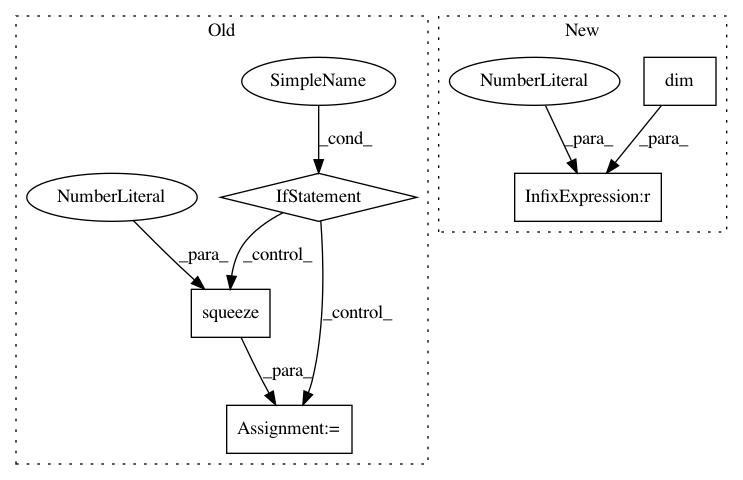

e9eded7aaff41973112a1e0df7f58b33593784dd,gpytorch/likelihoods/noise_models.py,_HomoskedasticNoiseBase,forward,#_HomoskedasticNoiseBase#,45
Before Change
num_tasks = noise.shape[-1]
batch_shape = _mul_broadcast_shape(noise_batch_shape, batch_shape)
noise = noise.unsqueeze(-2)
if len(batch_shape) == 0:
noise = noise.squeeze(0)
noise_diag = noise.expand(batch_shape + torch.Size([n, num_tasks])).contiguous()
if num_tasks == 1:
noise_diag = noise_diag.view(*batch_shape, n)
return DiagLazyTensor(noise_diag)
After Change
shape = p.shape if len(p.shape) == 1 else p.shape[:-1]
noise = self.noise
*batch_shape, n = shape
noise_batch_shape = noise.shape[:-1] if noise.dim() > 1 else torch.Size()
num_tasks = noise.shape[-1]
batch_shape = _mul_broadcast_shape(noise_batch_shape, batch_shape)
noise = noise.unsqueeze(-2)
In pattern: SUPERPATTERN
Frequency: 3
Non-data size: 5
Instances
Project Name: cornellius-gp/gpytorch
Commit Name: e9eded7aaff41973112a1e0df7f58b33593784dd
Time: 2019-04-12
Author: gpleiss@gmail.com
File Name: gpytorch/likelihoods/noise_models.py
Class Name: _HomoskedasticNoiseBase
Method Name: forward
Project Name: cornellius-gp/gpytorch
Commit Name: 8b99e31f40f9bbb77e0e9204227a049d101c25fe
Time: 2019-04-11
Author: gpleiss@gmail.com
File Name: gpytorch/likelihoods/noise_models.py
Class Name: _HomoskedasticNoiseBase
Method Name: forward
Project Name: pyprob/pyprob
Commit Name: 992401f82501726c593ef635b2d124f45ee20707
Time: 2018-04-09
Author: atilimgunes.baydin@gmail.com
File Name: pyprob/distributions.py
Class Name: Poisson
Method Name: log_prob